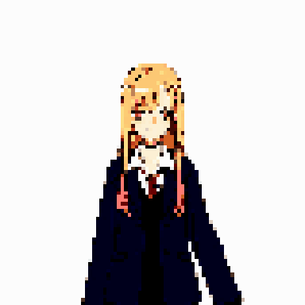

Service
住民票・証明書
住民票や印鑑証明、各種証明書の発行はこちら。引っ越しの届け出もまとめてサポートします。何を取ればいいか分からないときも、聞いてくれれば一緒に整理します。
Municipal Information Desk
むずかしい手続きも、ことばも、ぜんぶこちらで引き受けます。気軽に立ち寄れる、あなたのまちの新しい窓口です。
窓口をのぞいてみるService
住民票や印鑑証明、各種証明書の発行はこちら。引っ越しの届け出もまとめてサポートします。何を取ればいいか分からないときも、聞いてくれれば一緒に整理します。

ガル子
ギャル行政課 主任
はじめまして、主任のガル子だよ。役所のこと、なんでも聞いてね。むずかしい書類は、わたしたちが一緒に書きます。